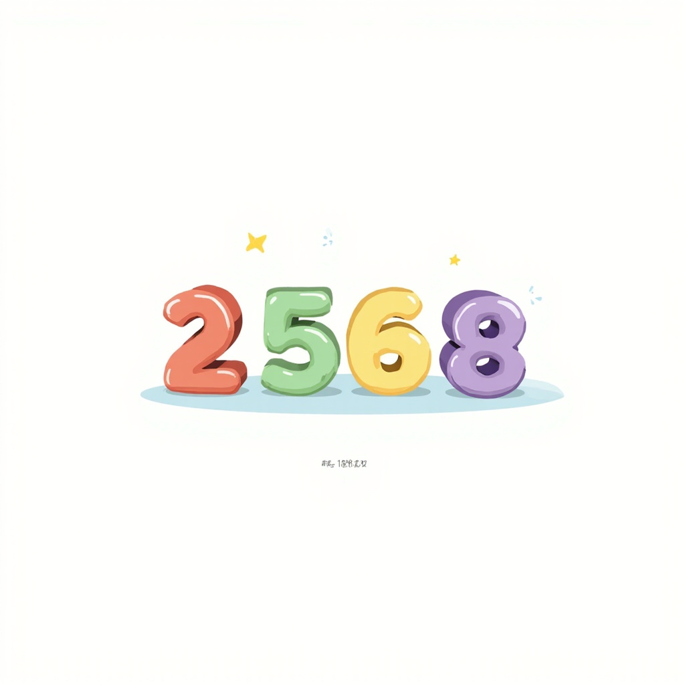
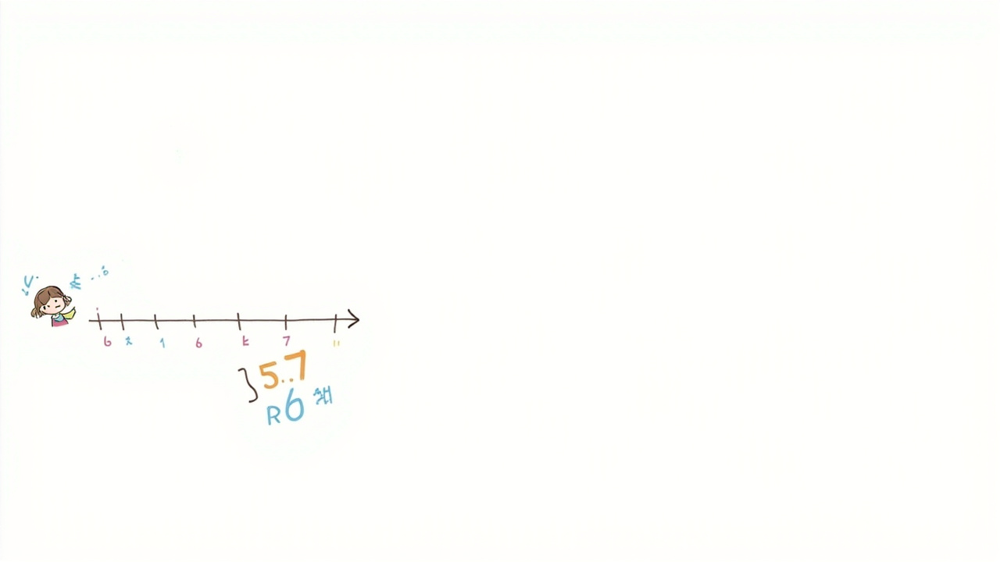
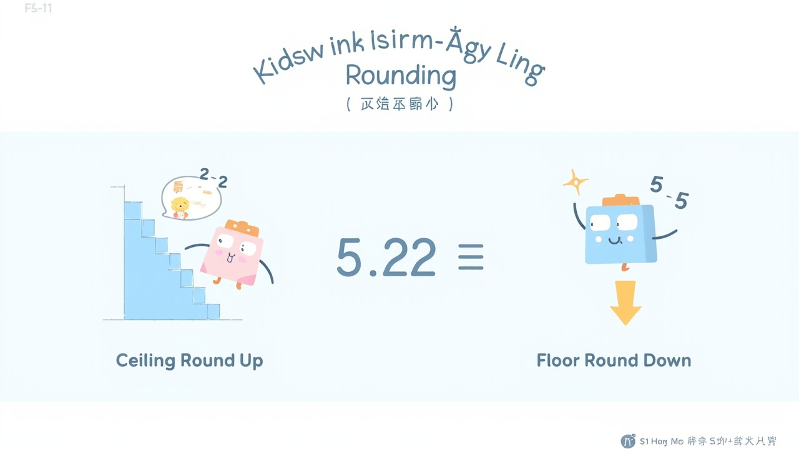
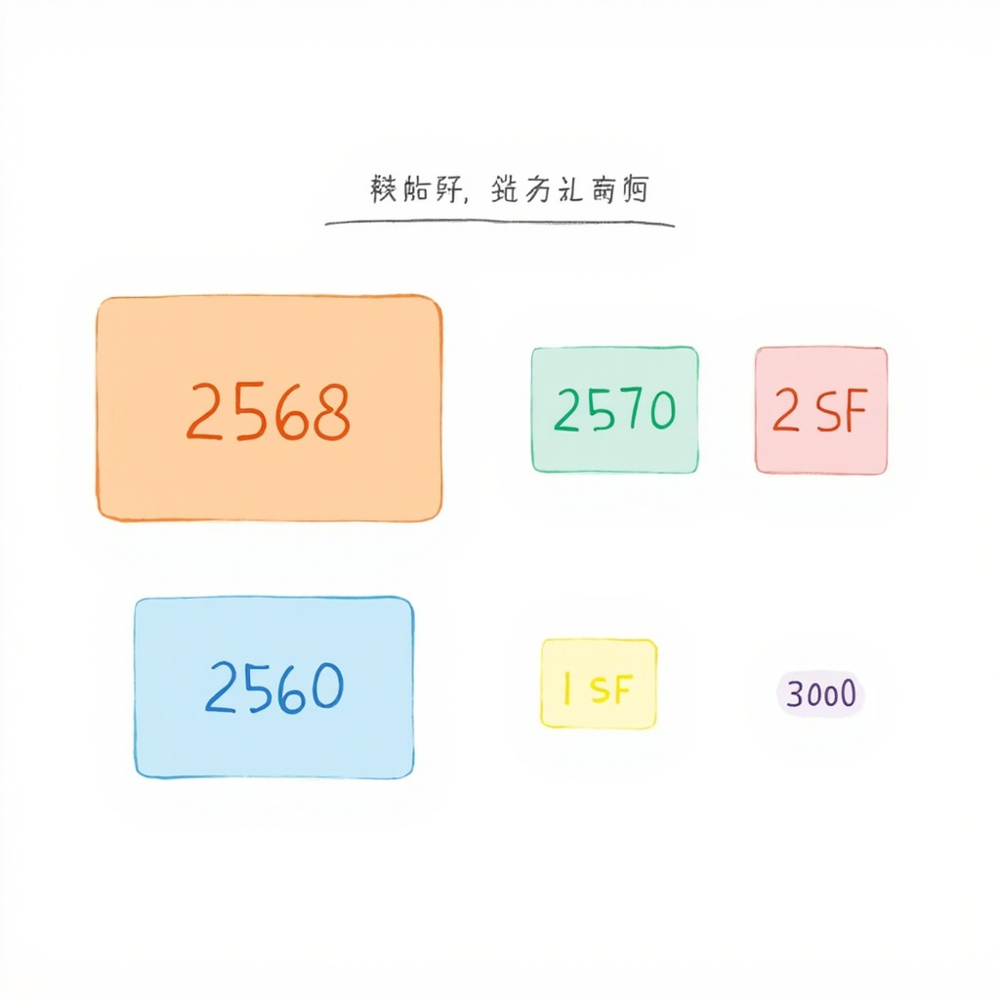

🔢 什麼是有效數字？
❌ 不算有效數字
- 2568 → 4 個有效數字
- 0.0256 → 3 個有效數字（前面的兩個 0 不算）
- 0.025600 → 5 個有效數字（最後的 0 是確定數字）
- 2500 → 2 個有效數字（如果表示取至百位）
- \(2.50 \times 10^3\) → 3 個有效數字
小學時我們學習過：
- 取接近個、十、百、千、萬位
- 取整數/個位/元
- 取小數後一、二、三位
- 天文數字：地球與太陽之間的距離 → 取幾多位？
- 極細數：細胞壁的厚度 → 取幾多位？
判斷有效數字的關鍵：
- 所有非零數字（1-9）都是有效數字
- 零的規則：
- 夾在非零數字之間的零 → 有效（如 101、205）
- 小數末尾的零 → 有效（如 2.50 中的 0）
- 數字開頭的零 → 無效（如 0.025 中的前兩個 0）
- 科學計數法： 只看係數部分的有效數字
306 → 3個 | 0.006 → 1個 | 3.060 → 3個 | 5.0 × 10⁴ → 2個
非零就數 + 夾中就算 + 頭零不數

📌 估算三部曲：截數 → 2選1 → 睇尾數
🔢 位值概念
📐 取近似值（小學版）
小學時我們學習過：
- 取接近個、十、百、千、萬位
- 取整數 / 個位 / 元
- 取小數後一、二、三位
- 🌌 天文數字：地球與太陽之間的距離 → 取幾多位？
- 🔬 極細數：細胞壁的厚度 → 取幾多位？
每一個數字都有它自己的「位置」，叫位值：
2 個千 + 5 個百 + 6 個十 + 8 個一
→ 取至百位：2568 ≈ 2600（睇十位 6 ≥ 5，入）
→ 取至千位：2568 ≈ 3000（睇百位 5 ≥ 5，入）
取整數：睇小數點後第一位是否 ≥ 5
12.6 → 13（小數位 6 ≥ 5，入）
12.4 → 12（小數位 4 < 5，捨）
取個位 / 元：原理相同，睇小數點後第一位
$47.80 → 取元位 → $48（超市通常上捨入）
$47.30 → 取元位 → $47
取小數後一位：睇第二位是否 ≥ 5
3.14 ≈ 3.1（第二位 4 < 5，捨）
3.16 ≈ 3.2（第二位 6 ≥ 5，入）
取小數後兩位：睇第三位是否 ≥ 5
3.141 ≈ 3.14（第三位 1 < 5，捨）
3.146 ≈ 3.15（第三位 6 ≥ 5，入）
取小數後三位：睇第四位是否 ≥ 5
3.1415 ≈ 3.142（第四位 5 ≥ 5，入）
3.1414 ≈ 3.141（第四位 4 < 5，捨）
小學：睇下一位 → 四捨五入 → 初中：有效數字 → 科學計數法
🔄 四捨五入
一般而言，
過半數就進位，
不過半數就維持原位
⬆️ 上捨入
超級市場買嘢預價錢，
想計多好過計少，
無論如何都進位
⬇️ 下捨入
想睇吓自己下限係幾多，
可以無論如何都唔進位
📐 三部曲操作法
例如：2568 取 10 位 → 先截 2560
例如：2560 或 2570
下捨入 → 取細
四捨五入 → 睇 5
四捨五入 (Round)： 睇尾數是否 ≥ 5
尾數是 8（大過 5）→ 進位 → \(2570\)
尾數是 2（小過 5）→ 唔進位 → \(2560\)
看第4個有效數字是 5 → 進位 → \(3.14\)
$$ 3.14159 \approx 3.14 \text{ (3 sf)} $$
例子：47 ÷ 9 ≈ 5.22...
如果上捨入到個位 → 取 \(6\)（哪怕係 5.0001 都要進位）
$$ \lceil 5.22 \rceil = 6 $$
例子：47 ÷ 9 ≈ 5.22...
如果下捨入到個位 → 取 \(5\)（哪怕係 5.9999 都唔進位）
$$ \lfloor 5.22 \rfloor = 5 $$
- 上捨入：超市預算、計算人手、估計材料
- 下捨入：估計最低收益、計算最低時間
超市 price tag → 上捨入 | 估下限 → 下捨入
以下內容整合自 Google Drive 學生筆記，視覺化呈現所有核心概念：



